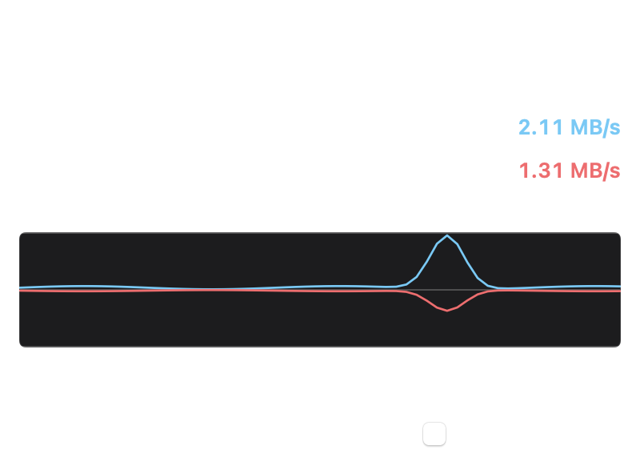

Free · Open source · macOS 14+
macOS menu bar network speed monitor
See live download and upload speed, data received, and data sent — with an Activity Monitor–style graph — without opening Activity Monitor.

Built for accurate Mac bandwidth reporting
MacNetSpeed is a lightweight menu bar bandwidth meter for people who need honest numbers: decimal byte units, stable right-aligned speeds, and totals that track what Activity Monitor shows for the same interfaces.
How to download and install
- Download the latest MacNetSpeed.dmg from GitHub Releases.
- Open the disk image and drag MacNetSpeed into the Applications folder.
- Launch from Applications. If Gatekeeper warns, use Right‑click → Open once.
- Click the menu bar speeds to open the panel. Enable Open at login if you want it at startup.
Prefer source? Clone github.com/Inzamam-SEO/MacNetSpeed and run ./Scripts/build-dmg.sh.
Frequently asked questions
Is MacNetSpeed free?
Yes. MacNetSpeed is free under the MIT License, including commercial use with attribution via the license terms.
Does it match Activity Monitor?
Data received and data sent are designed to track Activity Monitor Network totals for the same interface selection. Live rates use your update interval; Activity Monitor may label some rates in kilobits (kb/s) while MacNetSpeed uses kilobytes (KB/s).
Will it slow down my Mac?
The menu-bar path is a small periodic interface read. Top 20 apps accounting runs only while that section is open.
Where can I get support?
Open an issue on the GitHub repository.